Префектура Тотиги · Насу · гостиница
«Насу бэттэй Кай»: десять номеров в лесу у императорской виллы и старая гостиница «Сансуйкаку» рядом
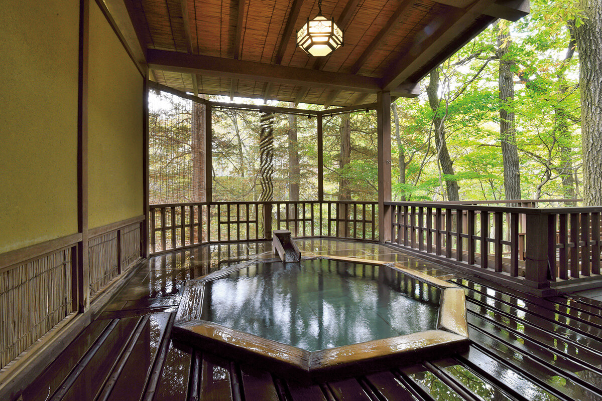
На склоне горы Насудакэ, недалеко от императорской виллы, в буковом лесу стоит гостиница всего на десять номеров. Её открыла семья, которая держит соседний «Сансуйкаку» с первых лет эпохи Сёва, и гости могут пользоваться обоими домами.
Место
Курорт императорской семьи
Когда японцы слышат слово «Насу», первым делом вспоминают императорскую виллу. Таких загородных резиденций для отдыха в жару и в холод у императорской семьи осталось три: в Насу, Хаяме и Судзаки. О Насу говорят чаще всего, и раз сюда ездят отдыхать члены императорской семьи, в здешнем климате можно не сомневаться.
До виллы от «Насу бэттэй Кай» около километра. Из Токио на синкансэне до станции Насу-Сиобара чуть больше часа, оттуда на такси около 30 минут. На машине по автостраде Тохоку до выезда Насу, а дальше вверх по дороге Насу-кайдо. На середине склона горы Насудакэ появляется скромная вывеска с одним иероглифом «Кай».
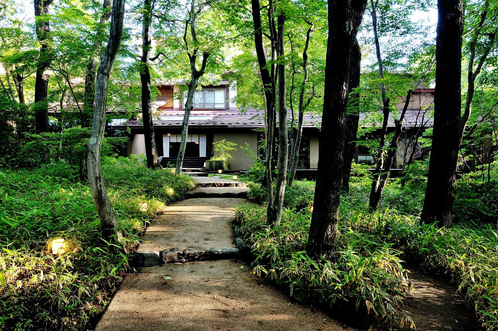
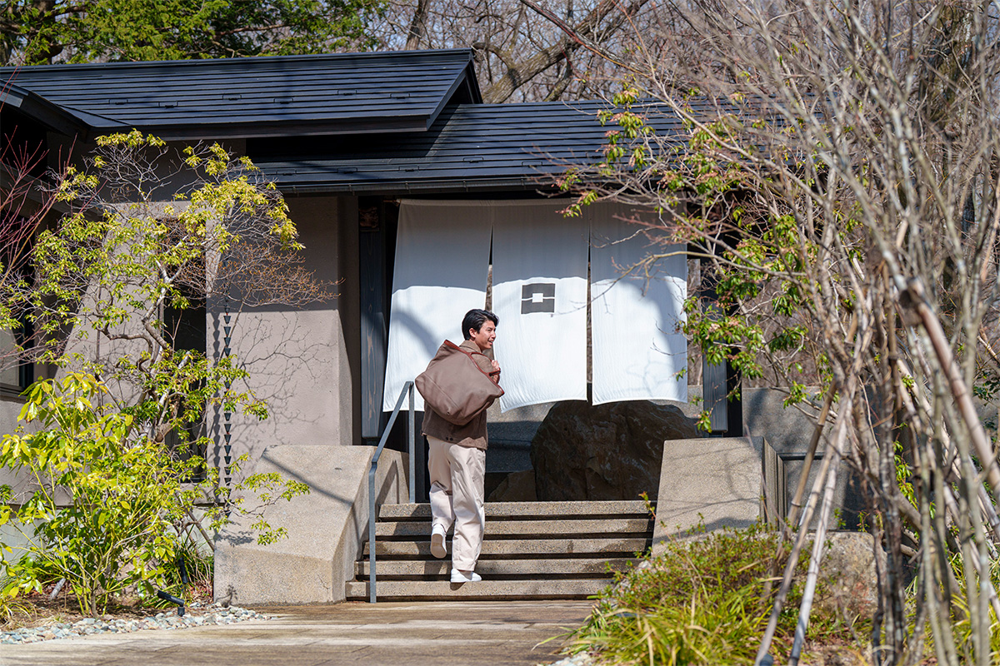
Насу славится и как место отдыха в горах, и как край горячих источников. Автор путевых заметок о гостинице 2020 года вспоминает, как удивился, прочитав у Торахико Тэрады, что названия Асо, Асама и Насу будто бы родственны и происходят от слова, обозначавшего вулкан. Где вулкан, там и горячие источники, так что слава здешних онсэнов возникла не вчера.
Гостиница
Бывший дом отдыха, где всё из этой земли
«Насу бэттэй Кай» сделала семья, которая держит гостиницу «Сансуйкаку» с первых лет эпохи Сёва (1926–1989). Под гостиницу перестроили бывший дом отдыха банка. В 2019 году здесь было девять номеров: отдельный домик в стиле сукия и восемь сьютов на участке около 8 000 квадратных метров. В 2023 году гостиницу обновили, и к 2026 году номеров стало десять, и все они сьюты.
Хозяин гостиницы, шестое поколение семьи, считает, что гостиница должна быть наследницей своей земли. Отсюда и её главная тема, «укоренённость»: повсюду работы местных мастеров и здешние материалы, и сам дом похож на витрину Насу. По коридорам развешаны произведения искусства, как в галерее.
«Сьюты мы начинали проектировать с того, что для каждого выбирали свой материал. Для первого номера это камень оя из Тотиги, для второго лакированные стены и пол. Для стены главной комнаты четвёртого номера мы нашли остатки старой красной глины и обожгли из неё свою керамику. Номер в рёкане это как спальня хозяина, которую показываешь гостю, поэтому я отбирал всё, в чём удобно мне самому: не только стройматериалы, но и матрасы, подушки, полотенца, шампунь»
хозяин гостиницы
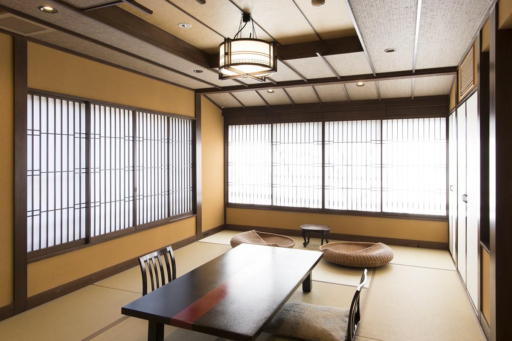
В 2026 году стены одних номеров покрыты землёй Насу, в других стоят умывальники, которые мастер вырезал из камня асино, его добывают в том же городке Насу. Есть комната, оклеенная бумагой васи, где чувствуешь себя как в коконе, и есть номера, где можно долго лежать в ванне и смотреть на лес. Все номера устроены по-разному, и выбирать свой интересно уже заранее.
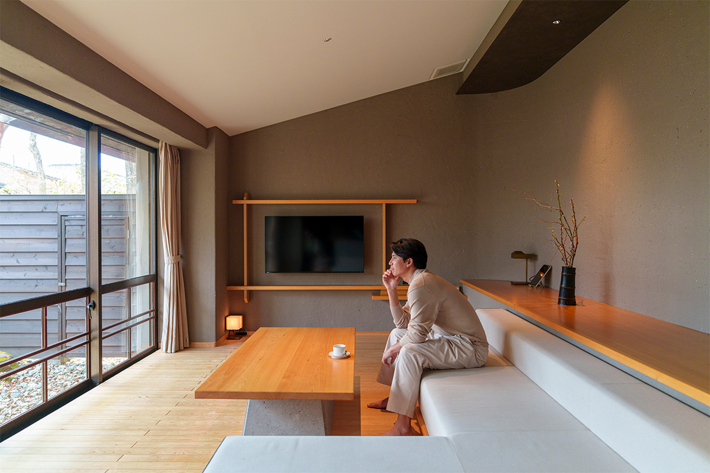
Креативный директор, которая каждую неделю летает по стране и за границу, в 2019 году выбрала «Насу бэттэй Кай» для двух свободных дней. Она остановилась в четвёртом номере, сразу переоделась и устроилась с книгой на большом диване, который стоит на ступень ниже гостиной, лицом к террасе. В других номерах вместо дивана есть приподнятый помост с татами, где можно просто вытянуться. Слышно только, как ветер качает буки и дубы за окном.
«Даже когда дни заполнены до отказа, мне нужно время, чтобы всё обнулить и посмотреть на себя со стороны. Мы часто ездим на онсэн с семьёй и родителями: вкусно поесть и спокойно полежать в горячей воде, для меня это очень важный отдых»
креативный директор, гостья гостиницы
Персонал заговаривает с гостями ровно столько, сколько нужно, и не мешает. Так задумано, чтобы гость не стеснялся и проводил время как хочет, один или с близкими друзьями.
Онсэн
Своя ванна в каждом номере
У каждого номера своя купальня с горячей водой из источника, и все они разные. В первом номере ванна в форме замочной скважины: гостья сравнила её с древним курганом, а в гостинице говорят, что это ключ, которым гость «сбрасывает» будни. Есть ванны из камня и из японского кипариса хиноки, и в каждой по-своему вырезан кусок пейзажа за окном.
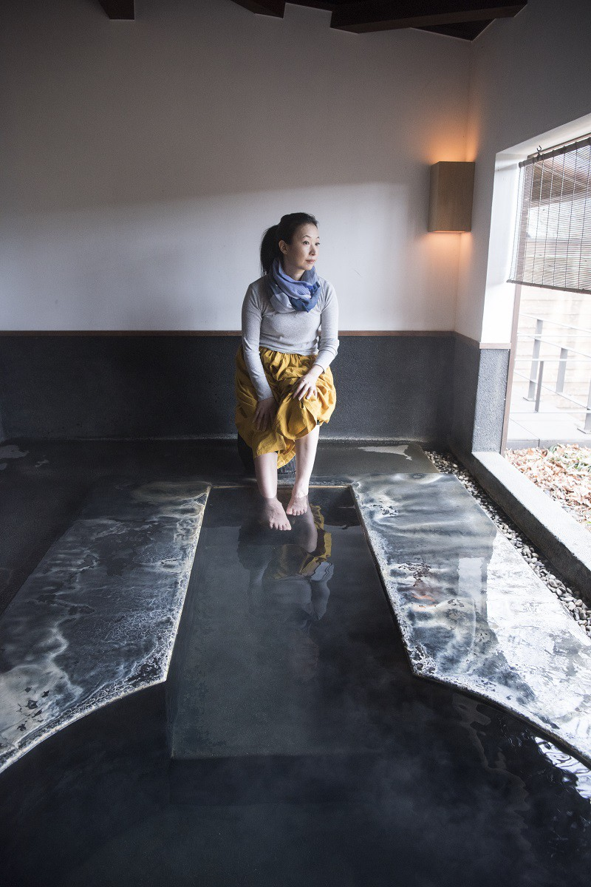
В 2019 году воду брали из источника Омару, который бьёт на середине склона горы Тяусу, главной вершины хребта Насу. Вода бесцветная и прозрачная, мягкая для кожи. По описанию 2026 года, в номера идёт вода из источника Син-Насу, такая же, как на императорской вилле; считается, что она хороша для кожи и снимает усталость.
«Было так приятно, что я принимала ванну в номере дважды, утром и вечером. Ранним утром свет над водой был такой красоты, что дух захватывало»
креативный директор, гостья гостиницы
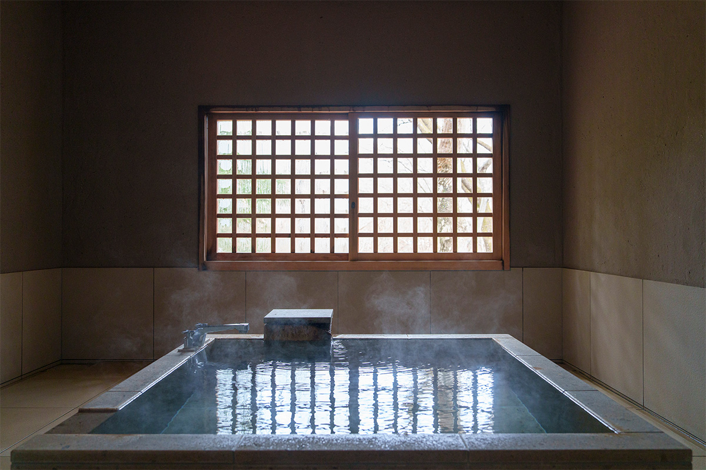
Кухня
Ужин на углях
Ингредиенты в гостинице берут прежде всего местные: говядину чёрных коров Насу, свинину Насу Сангэнтон, овощи соседних фермеров, а к ним лучшее со всей страны. В 2019 году ужин подавали в номер. В тот раз, ранней весной, гостья ела репу, молодые ростки папоротника, листья асита-ба, молодой корень лопуха, побеги бамбука и толстые грибы сиитакэ, выращенные на бревне. В горшок для сябу-сябу клали листья сансё и белый лук «Сиро бидзин нэги», местную гордость Насу.
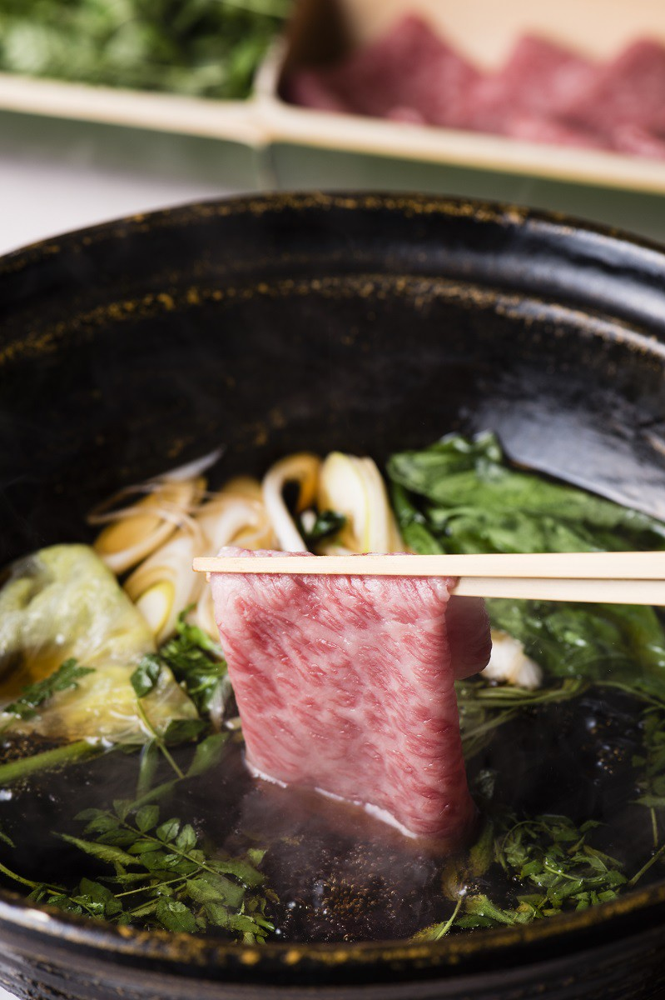
«Есть и мясо, например тушёная в мисо говядина и сябу-сябу, но даже одних овощей хватает, чтобы наесться. Их готовят так, что раскрывается вкус самих продуктов: и овощи, и горные травы чувствуешь по-настоящему»
креативный директор, гостья гостиницы
В 2026 году ужин подают в ресторане с угольным грилем: в центре зала стоит каменная жаровня, на которой жарят рыбу аю. Кухня здесь горная, кайсэки: говядина Тотиги, аю из чистой реки Нака, только что собранные овощи.
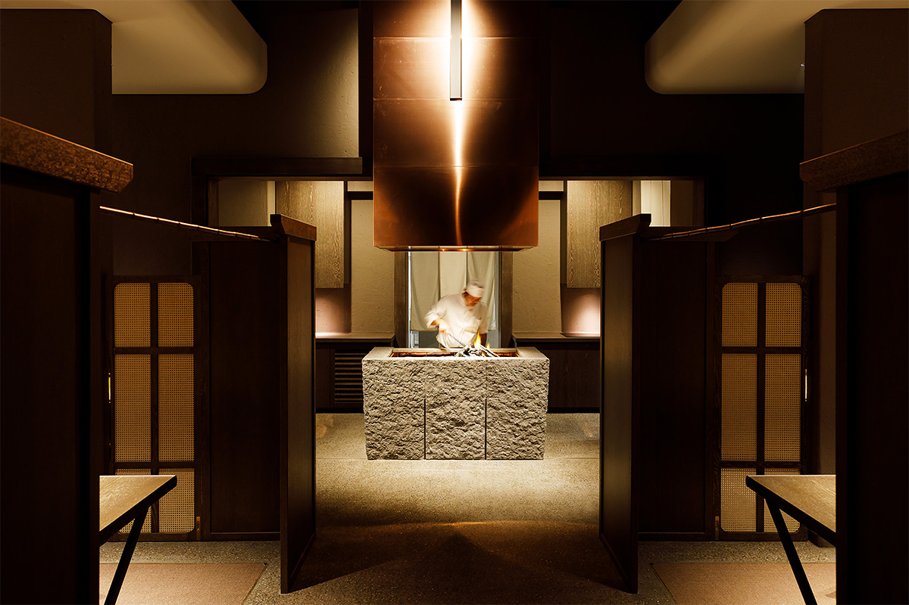
Автор заметок 2020 года отмечает, что морского здесь немного, основа кухни горная и речная. Ничего особенного в продуктах нет, в основе то, что японцы ели всегда, но вкус земли и сезона раскрывается полностью, и за несколько дней это особенно заметно.
Лаунж
Lounge206
После ужина гости идут в Lounge206 при свечах. В 2019 году бар работал с 21:00 до 24:00, а в коктейли щедро добавляли клубнику «Тотиотомэ». Креативный директор просидела там за разговорами с персоналом до глубокой ночи.
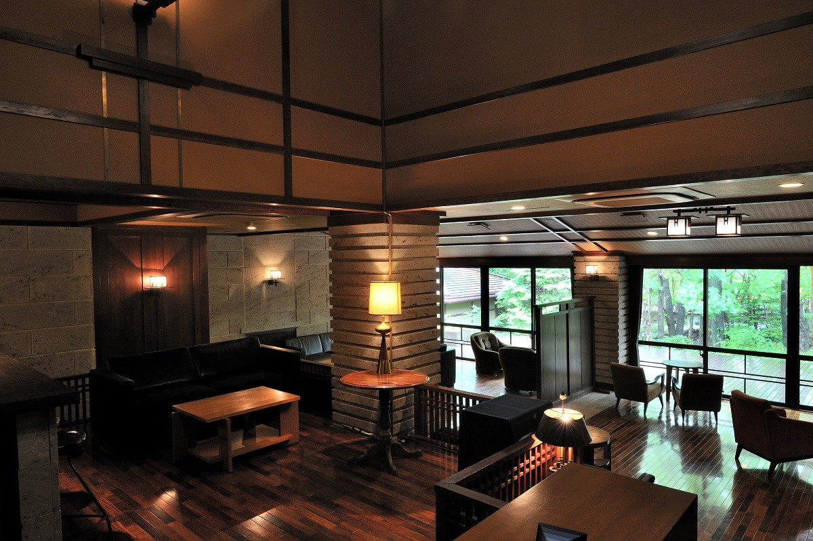
«Хотя персонал и держится на расстоянии, все очень дружелюбные, многие моего возраста, так что разговор идёт легко. Мне нравится само место, но вернуться сюда хочется ещё и ради этих людей»
креативный директор, гостья гостиницы
Стены лаунжа выложены камнем оя, а мебель здесь из коллекции хозяина: известные кресла японских и зарубежных дизайнеров и скандинавские диваны.
Два дома
«Сансуйкаку»: старая гостиница по соседству
Гостиница названа «бэттэй», то есть «отдельная резиденция», потому что у неё есть главный дом, рёкан «Сансуйкаку». Гость «Насу бэттэй Кай» может пользоваться и его помещениями, и, по мнению автора заметок 2020 года, это главная причина остаться здесь на несколько ночей. Название «Сансуйкаку» значит «башня гор и воды»: тихие горы, журчащая вода и дом, откуда хорошо видно округу. А «Кай», предполагает автор, значит «возвращение»: к тому, с чего когда-то начинались японские гостиницы, или гостя, который однажды здесь побывал и снова приедет.
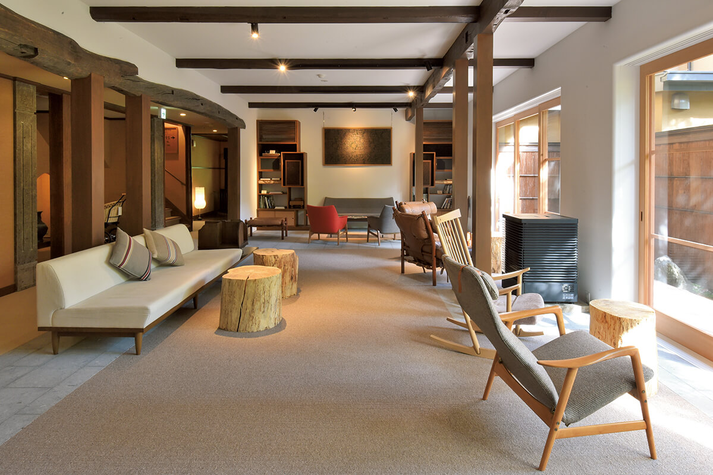
Салон «Сансуйкаку» это светлое просторное помещение, где гости проводят время между купаниями и прогулками. Можно часами смотреть на зелень, читать книги из библиотеки, пить чай или просто дремать. В 2020 году к чаю из листьев клёна мэгусури-но ки, который растёт в Тотиги и Нагано, подавали кекс с чёрной соей и матчей. В «Сансуйкаку» есть и большая купальня с водой из источника; гостям «Кай» она тоже открыта.
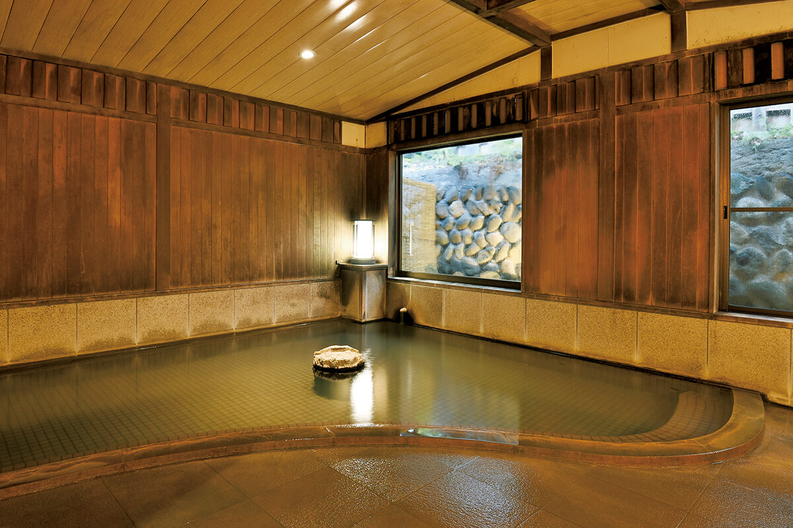
Обе гостиницы обустроены красиво, но ничего не навязывают: гостю спокойно дают пользоваться всем по своему желанию, а персонал рядом, но не надоедает. Для тех, кто приезжает на несколько ночей, именно это особенно важно. Днём можно уехать обедать в окрестности: в Насу есть известные кофейни, французский ресторан в лесу, горная кухня с дикими травами и грибами. А вечером, вернувшись в гостиницу, услышать «С возвращением».
«Насу бэттэй Кай»
- Адрес
- префектура Тотиги, уезд Насу, Насу, Юмото, 206
- Телефон
- +81 287-76-3180
- Номера
- 10
- Цены / Вход
- от 53 900 иен с человека с ужином и завтраком, с налогами и налогом на онсэн (2026)
- Заезд / выезд
- 15:00 / 11:00
- Как добраться
- от выезда Насу автострады Тохоку около 15 минут на машине; от станции Насу-Сиобара (синкансэн Тохоку) около 30 минут на такси (в 2019 году был бесплатный трансфер со станции по предварительной записи)
- Сайт
- bettei-kai.jp
«Сансуйкаку»
- Адрес
- префектура Тотиги, уезд Насу, Насу, Юмото, 206
- Телефон
- +81 287-76-3180
- Номера
- 14
- Цены / Вход
- от 18 000 иен с человека с ужином и завтраком, номер с ванной от 29 000 иен (с сервисным сбором, без налога, 2020)
- Заезд / выезд
- 15:00 / 11:00
- Как добраться
- от станции Насу-Сиобара автобусом около 40 минут до остановки «Сансуйкаку иригути»
- Сайт
- sansuikaku.com
Фото: Ацуси Ямахира, Ко Миядзи.